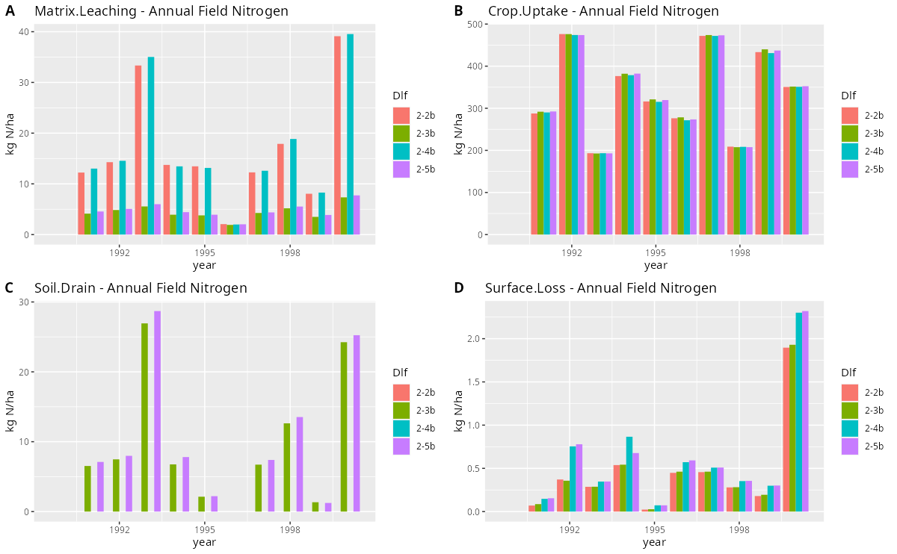

A suite of visualization tools for Daisy log files written in R.
Installation
daisyrVis is currently only available from github.
Use pak to install
install.packages('pak')
pak::pkg_install('https://github.com/daisy-model/daisyrVis')
and remove
pak::pkg_remove('daisyrVis')
Or use devtools to install
install.packages('devtools')
devtools::install_git('https://github.com/daisy-model/daisyrVis')
and remove
remove.packages('daisyrVis')
The contents of the package can be listed with
library(daisyrVis)
ls("package:daisyrVis")
Examples
Reading dlf files
library(daisyrVis)
example(read_dlf)
Plotting
library(daisyrVis)
example(plot_dlf)
example(animate_dlf)
example(plot_mass_balance)
The call to eaxmple(plot_dlf) should produce a plot similar to this

Bar plots of four annualy logged variables from four different Daisy log files
Mass balance
library(daisyrVis)
example(mass_balance)
example(mass_balance_summary)
Utility functions
library(daisyrVis)
example(subset_dlf)
example(daisy_time_to_timestamp)
Development
Follows https://r-pkgs.org/
Start R in base of repository. Then use devtools to load, check and install package
library(devtools)
load_all()
lint()
check()
install()